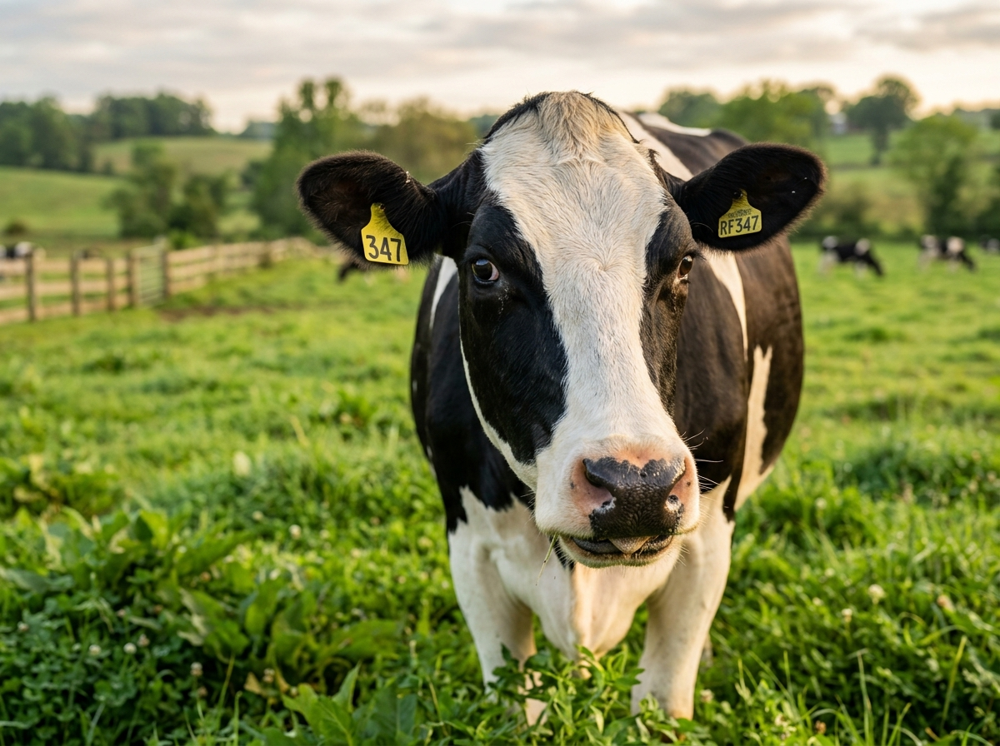
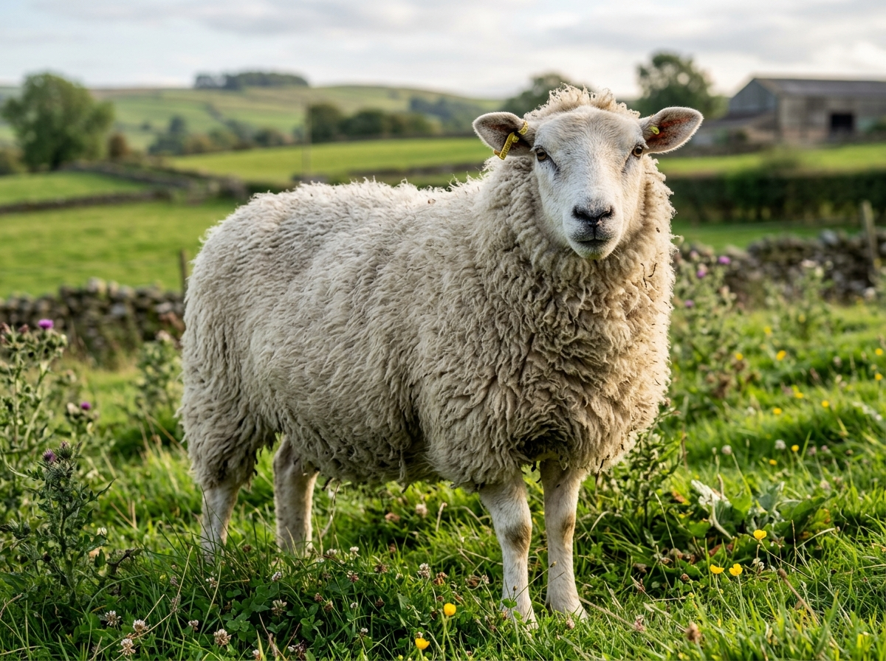
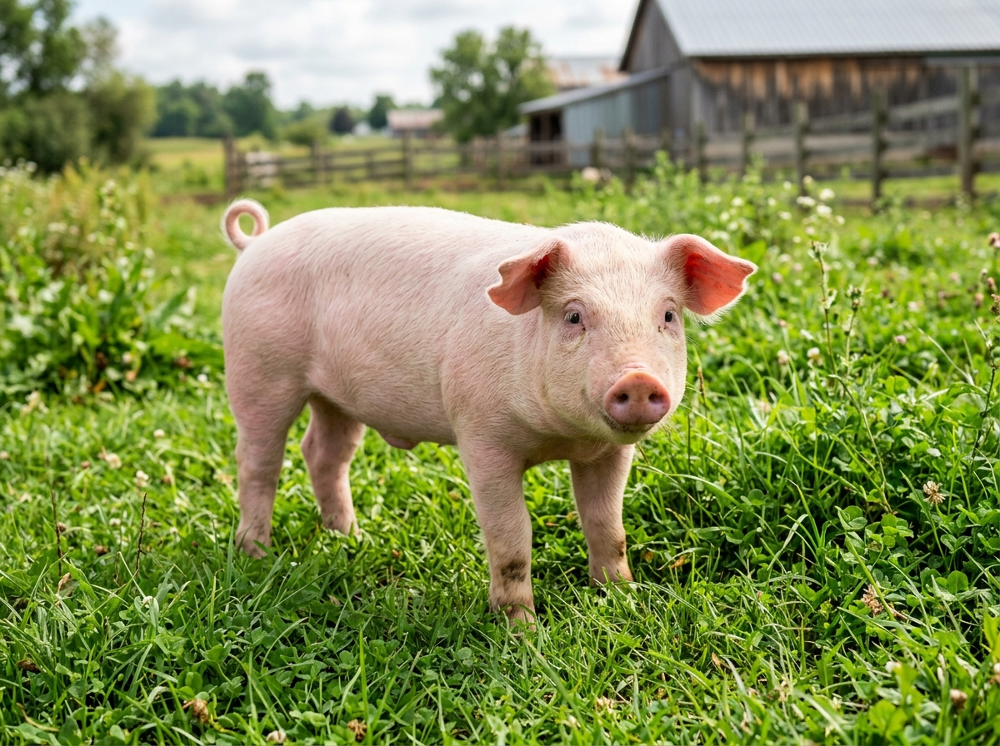
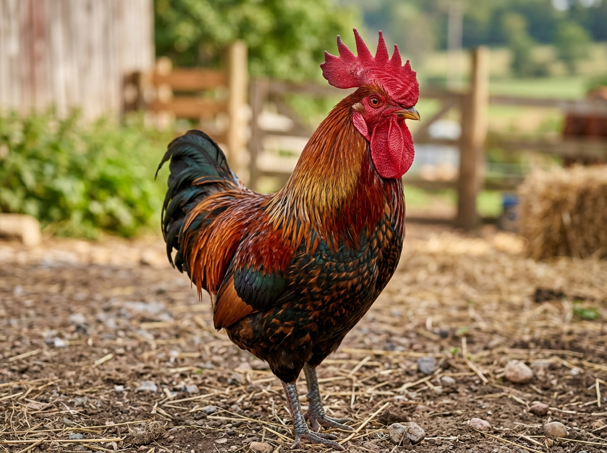

A high-performance genomics platform for annotating genomic regions, Animal QTLdb trait associations, and GTF gene models across livestock species — with custom flanking window analysis.
No installation required • CLI + Web • Research-ready
From single SNP marker windows to high-throughput chromosome QTL mapping — everything you need for comprehensive functional annotation.
Detect overlapping QTLs across Cattle, Goat, Sheep, Pig, Chicken, and Horse using curated BED and GFF trait databases.
Annotate genomic intervals with Ensembl and NCBI GTF annotations, gene biotypes, descriptions, and feature filters.
Have single variant positions (Chr:Pos)? Define flanking windows (e.g. ±10kb, ±25kb, ±50kb, ±100kb) with the --window flag.
Compute exact base-pair overlap lengths, overlap percentages, and TSS distances to prioritize significant associations.
Explore genes, exon structures, QTL spans, and signal intensity tracks with zoom, pan, and hover tooltips.
Connect candidate genes with gold-standard functional suites including DAVID, g:Profiler, and PANTHER with publication-ready citations.
A seamless annotation pipeline that takes you from raw coordinates to functional insight.
Provide range intervals (chr:start-end) or SNP positions with flanking windows.
→QGAT maps intervals against Animal QTLdb and GTF gene models with overlap stats.
→Explore chromosome tracks, gene biotypes, and QTL traits in the genome browser.
→Download research-ready tables and seamlessly submit candidate genes to DAVID or g:Profiler for paper publication.
Choose your analysis type and provide your genomic data.
Coordinates + GTF File → Get List of Genes
Coordinates + Select Animal → Get List of QTLs
Coordinates + Animal + GTF → Genes & QTLs Combined
Provide genomic coordinates (either Chr, Start, End or Chr, Position with a flanking window) along with a GTF file to extract the complete list of overlapping genes.
Supply your custom GTF file, or select a pre-loaded reference GTF for livestock animals:
Select your livestock animal and provide coordinates (Chr, Start, End or Chr, Position with window). QGAT uses internal Animal QTLdb files to return the list of overlapping QTLs.




Map both GTF gene models and Animal QTLdb intervals on the same coordinates to see which genes overlap known trait QTLs.
Enrich candidate genes identified by QGAT with leading peer-reviewed functional profiling suites (DAVID, g:Profiler, PANTHER, ShinyGO). Launch one-click live analyses and copy publication-ready manuscript citations.
Gene symbols and Ensembl IDs extracted from your QGAT analysis or custom input.
Gene list functional profiling engine with direct Ensembl support for all 6 livestock genomes. Computes Gene Ontology (GO:BP, GO:MF, GO:CC), KEGG, Reactome, WikiPathways, and regulatory TF motifs with multiple testing correction.
Comprehensive knowledgebase for high-throughput functional annotation, Functional Annotation Clustering, 2D chart visualization, and Gene Ontology term enrichment across domestic animal genomes.
Official Gene Ontology Consortium platform providing binomial overrepresentation tests for GO terms (BP, MF, CC), PANTHER Pathways, and protein evolutionary families with species-specific backgrounds.
Intuitive graphical enrichment suite with interactive enrichment network graphs, hierarchical clustering trees, and KEGG pathway maps utilizing current Ensembl annotations for domestic livestock.
Comprehensive analysis of your genomic regions.
| Gene Symbol | Gene ID (GTF) | Chromosome | Gene Coordinates | Biotype | Overlap (bp) | Overlap (%) | Distance to TSS | Strand | Action |
|---|
| QTL ID | Animal | Chromosome | QTL Interval | Trait Name | Trait Class | Overlap (%) | PubMed ID | Action |
|---|
QGAT (QTL and Gene Annotation Tool) is a high-performance bioinformatics platform and interactive web application designed to identify Quantitative Trait Loci (QTLs) and annotate genomic regions with gene models, biotypes, and trait associations across major livestock species.
QGAT supports flexible input parsing. Column names are case-insensitive, auto-detects separators (tab, comma, space), and handles Excel UTF-8 BOM automatically.
chromosome start end 1 22834818 23381127 2 38590 3831532 14 1800000 3100000
--windowchromosome position 1 22834818 2 38590 14 1801116
When using position-only input, specify --window SIZE (in base pairs) to automatically create intervals: [position - window, position + window].
QGAT flexibly recognizes a wide range of common column headers:
chromosome, chr, chrom, CHR, #CHROM, contig, seqnamestart, START, begin, chromStart, region_startend, END, stop, chromEnd, region_endposition, pos, POS, bp, BP, loc, location, snp_posQGAT v0.2.0 provides an intuitive command-line interface with subcommands for QTL identification, GTF gene annotation, and candidate gene extraction:
QGAT qtl)Find overlapping QTLs across 6 livestock species using pre-packaged Animal QTLdb databases with either range intervals or position-only variants:
# Standard Range input (chromosome, start, end) QGAT qtl -i input_regions.tsv -species cattle -o output_qtls.tsv # Position-Only variant input with flanking window (chromosome, position) QGAT qtl -i snps.tsv -species goat -o output_qtls.tsv --window 50000 # Trait-specific search with P-values from GFF database QGAT qtl -i input_regions.tsv -species cattle -trait -o trait_qtls.tsv
QGAT annotate)Annotate genomic regions against GTF gene models (Ensembl or NCBI), computing exact overlap length, percentage coverage, and distance to transcription start sites (TSS):
# Standard Range gene annotation with Ensembl GTF QGAT annotate -i input_regions.tsv -gtf genome.gtf -o annotated.tsv # Position-Only SNPs with 100 kb flanking window QGAT annotate -i snps.tsv -gtf genome.gtf -o annotated.tsv --window 100000 # Filter to specific GTF features (e.g. gene only) QGAT annotate -i input_regions.tsv -gtf genome.gtf -o annotated.tsv --feature gene # Upstream/downstream flanking promoter extensions (+/- 5 kb) QGAT annotate -i input_regions.tsv -gtf genome.gtf -o annotated.tsv --upstream 5000 --downstream 5000 # Using NCBI GTF annotations QGAT annotate -i input_regions.tsv -gtf ncbi_genome.gtf -ncbi -o annotated.tsv
QGAT plot)Generate publication-quality bar plots of trait frequencies from GFF-based QTL runs:
QGAT plot -i trait_qtls.tsv -o trait_distribution_barplot.png
Extract unique candidate gene symbols from QGAT annotation results for functional enrichment profiling in DAVID, g:Profiler, PANTHER, or ShinyGO:
# Extract unique gene symbols from QGAT output cut -f 10 annotated.tsv | sort -u > candidate_genes.txt # Pipe directly into the QGAT Web App Gene Ontology workspace # for 1-click execution in g:Profiler, DAVID, PANTHER, and ShinyGO
QGAT includes curated, pre-indexed QTL databases for six major livestock species:
overlap_bp), percentage overlap (overlap_pct), and distance to transcription start site (distance_to_tss).--upstream and --downstream flags to inspect flanking promoter or regulatory regions.gene, exon, CDS, or transcript features from GTF files.QGAT bridges candidate gene discovery with external peer-reviewed functional enrichment suites. Users can send prioritized candidate gene sets directly to:
The Gene Ontology workspace provides 1-click formatted citations and a pre-composed "Materials and Methods" boilerplate paragraph ready for direct insertion into research manuscripts.
QGAT (QTL and Gene Annotation Tool) is a dedicated bioinformatics platform developed to empower livestock genomics researchers with fast, accurate, and flexible annotation of QTLs and gene features.
Combining an efficient Python CLI engine with an interactive, modern web exploration interface, QGAT bridges the gap between high-throughput sequencing/GWAS coordinates and actionable biological insights.
QGAT is developed and maintained by researchers at ICAR - National Bureau of Animal Genetic Resources (NBAGR), Karnal, Haryana, India:
If you use QGAT in your research or publications, please cite:
QGAT: QTL and Gene Annotation Tool (v0.2.0) Choudhary, A., Kumar, A., Ahmad, S.F., Ghandham, R.K., Mohan, N.H. ICAR - National Bureau of Animal Genetic Resources (NBAGR), Karnal, India.
Developed at ICAR-NBAGR. Open source for academic and agricultural research.
Source code, issues, and contributions are available on GitHub: https://github.com/akanksha-ch0/QGAT